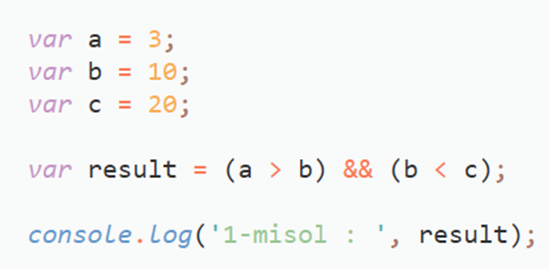
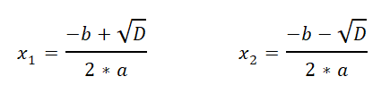

Mantiqiy amallar buyicha misol yechish na'muna:
Misol : 3 ta son berilgan shuni rostlikka tekshiring.
A > B < C

Mantiqiy amallar buyicha masalalar:
a va b sonlari berilgan jumlani rostlikka tekshiring: a > 2 va b < 10
3 ta a,b,c sonlari berilgan , jumlani rostlikka tekshiring: b soni a va c onlari orasida yotadi
Ikkita a va b sonlari berilgan , jumlani rostlikka tekshiring : a va b sonlari toq sonlar
Bitta a soni berilgan , jumlani rostlikka tekshiring : a soni juft son
Bitta a soni berilgan, jumlani rostlikka tekshiring, a soni ikki xonali son
IF ELSE bo'yicha masalalar:
a soni berilgan, agar shu soni musbat bo'lsa unga 1 qo'shilsin , agar manfiy bo'lsa 10 ga ko'paytirilsin. Natijasiga console ga chiqrilsin
Ikkita a va b sonlari berilgan , shularning kattasini aniqlovchi dastur yarating
3 ta son berilgan , shularning eng kichigini aniqlovchi dastur yarating
Butun a soni berilgan. Berilgan sonni musbat toq son, manfiy juft son, son nolga teng' va x.k larni console ga yozadigan dastur yarating.
1-999 oraliqdagi sonlar berilgan. Berilgan sonni ikki xonali juft son, uch xonali toq son va x.k ni ekranga chiqaruvchi dastur yozing.
Kvadrat tenglamani hisoblovchi dastur yarating. ax2+bx+c=0 tenglama kvadrat tenglama deyiladi. Kvadrat tenglamaning yechimlari uning diskriminantiga bog`liq. D = b2+4*a*c; Agar discriminant 0 dan kichik bo'lsa, kvadrat tenglamaning yechimlari mavjud emas, agar discriminant 0 ga teng boladigan bo`lsa, kvadrat tenglamaning yechimi bitta:
x_1= x_2= -b/(2*a)
Diskriminant 0 dan katta bo'ladigan bo'lsa, unda kvadrat tenglamanig yechimlari soni 2 ta:

Ushbu kvadrat tenglamaning yechimlarini hisoblovchi dastur yarating!